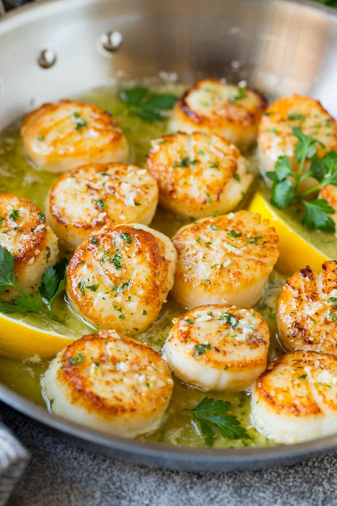

Perfect Sea Scallops!

Pan Seared Sea Scallops
Golden pan seared sea scallops with a citrus buerre blanc all made in the same pan.
Ingredients:
- Sea Scallops
- Fresh lemon juice
- White Wine
- Butter
Steps to make:
- Heat up pan, then add 1tbls oil
- Pat dry the scallops and then place in pan
- Cook for 2 min, or until golden brown
- Flip and cook for 2 more minutes.
- Remove scallops and add white wine to pan to deglaze.
- Add lemon juice
- Add butter, melt and stir, drizzle over scallops